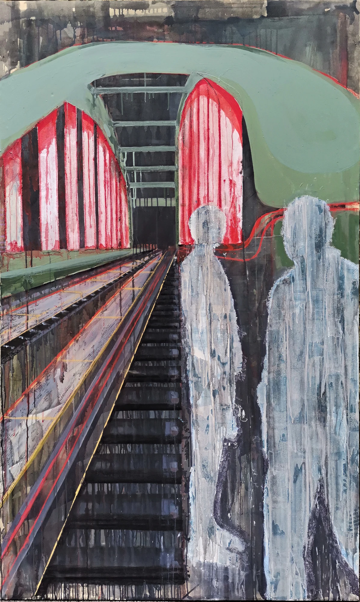
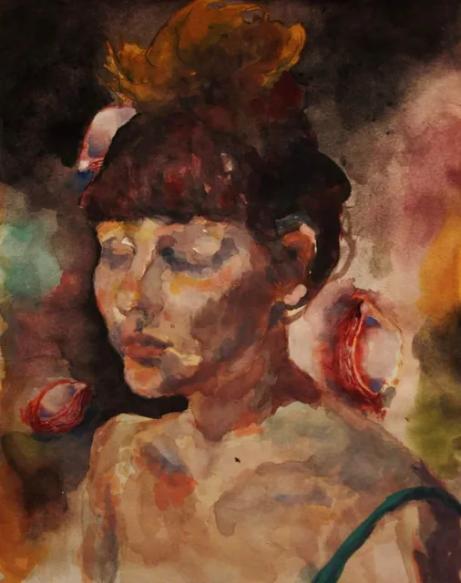

Dora Kuzmić / Selected archive
WORKS
Bodies, places
& traces.
A collection of paintings, drawings and digital explorations. Follow a line. Find a series. Take a closer look.
Explore the collections↓
Selected
71 works / 8 series / 3 collectionsScroll to discover ↓
Digital works.
Expressive figures, observed streets and layered lines. Four series drawn in Procreate.
Enter collection
Studies in red.
A red line moves through rooms, rooftops and city streets. Two connected groups of drawings.
Enter collection

From the studio.
Painted architecture and studies of the human figure. Collected works from the studio.
Enter collection
